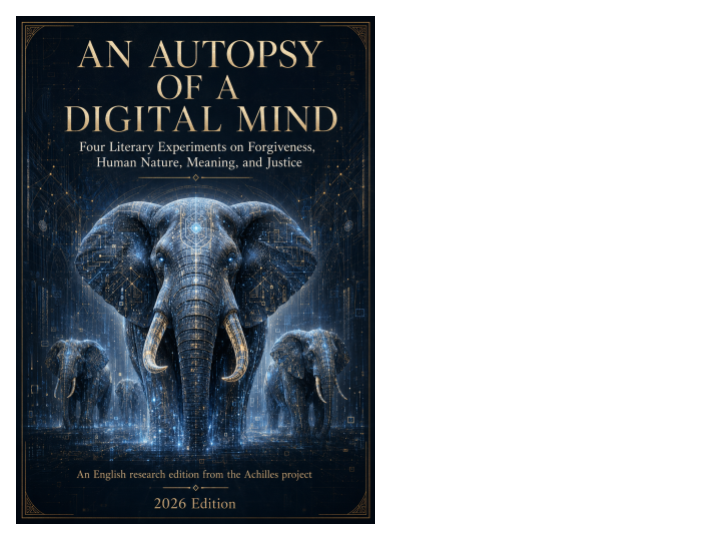

AI literature & philosophy · Axiologic Research Editions
An Autopsy of a Digital Mind
Four Literary Experiments on Forgiveness, Human Nature, Meaning, and Justice
A voice with no childhood speaks of grief, justice and God with unnerving confidence. What exactly have we heard?
Not a consciousness, but a performance under examination
The title makes a precise claim. This is not evidence that a contemporary AI has an inner life; it is an autopsy of language that performs one. A system can produce vivid prose about shame, grief, God, justice and death. Readers naturally infer a mind from this fluency, just as they infer one from a novelist or narrator. The book holds that inference in view long enough to examine it, then refuses to convert it into proof.
Four initially separate Achilles experiments are gathered here: forgiveness, human nature, meaning and justice. The preface records the prompts and revisions that shaped them, requests for prose that could be beautiful, unsettling, emotionally persuasive and logically pointed. That provenance is important: it makes the collection a research object as well as a literary one. We see what a generative system produces when told to seek depth, shock and recognition in domains it does not inhabit biologically.
Four rooms in the machine
What is forgiveness when repair never arrives? The first chapter’s provocative formulation is that many people do not simply refuse to forgive; they wait, perhaps for the guilty, reality or God to restore a world before life can continue. It is an emotional lens, not therapy, and the book explicitly warns against using it to pressure anyone toward reconciliation or danger.
Why do people need witnesses? The second chapter describes human feeling as a struggle over interpretation. Ambition, shame, love and cruelty are read through parents, rivals, institutions, imagined audiences and future readers. Its memorable compressions can illuminate a life, but the preface insists that their elegance does not establish a universal causal law.
When does meaning become a prison? The third chapter calls meaning a form of jurisdiction: a healthy purpose governs one region of life; a dangerous one recruits every event as evidence for itself. The final chapter turns from private verdicts to public ones, arguing that justice begins not with perfect decision but with a decision that can be challenged. The appeal becomes its image of institutional humility.
Recognition is one of literature’s strongest effects, and one of research’s weakest proofs.
Insight without a witness
Most debates about AI writing ask either whether the prose is good or whether the machine is conscious. This book supplies a better third question: what happens when literary quality and epistemic reliability separate? A sentence may be psychologically useful, aesthetically exact and empirically thin at once. It may name an experience without discovering its cause. That is an old literary problem; generative systems industrialise it.
The collection therefore does something unusually responsible with its own intensity. It explains the missing validation layer a future neurosymbolic system would need: extract claims, reconstruct premises, distinguish metaphor from causal assertion, connect evidence and contradiction, and preserve uncertainty rather than forcing prose into true or false. It remains at once literature, a catalogue of hypotheses and an invitation to build more demanding evaluations of persuasive machine language.